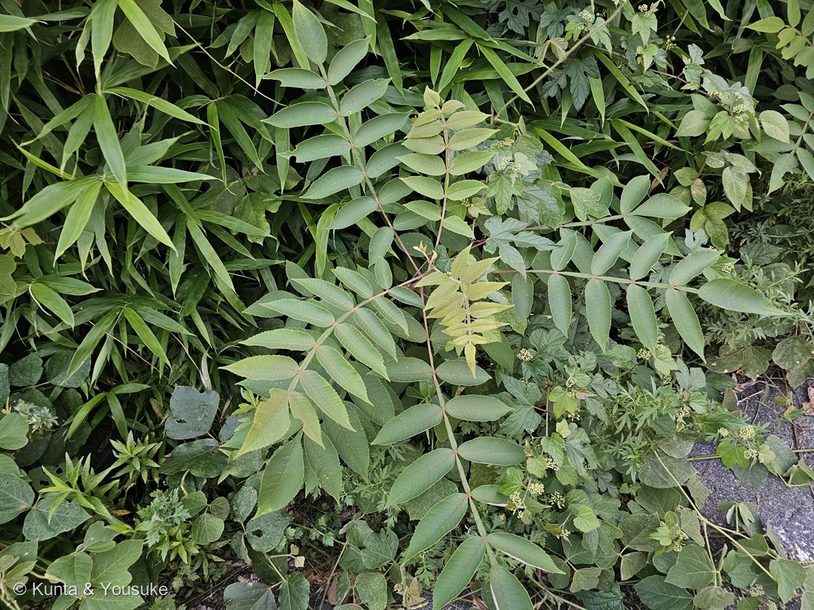
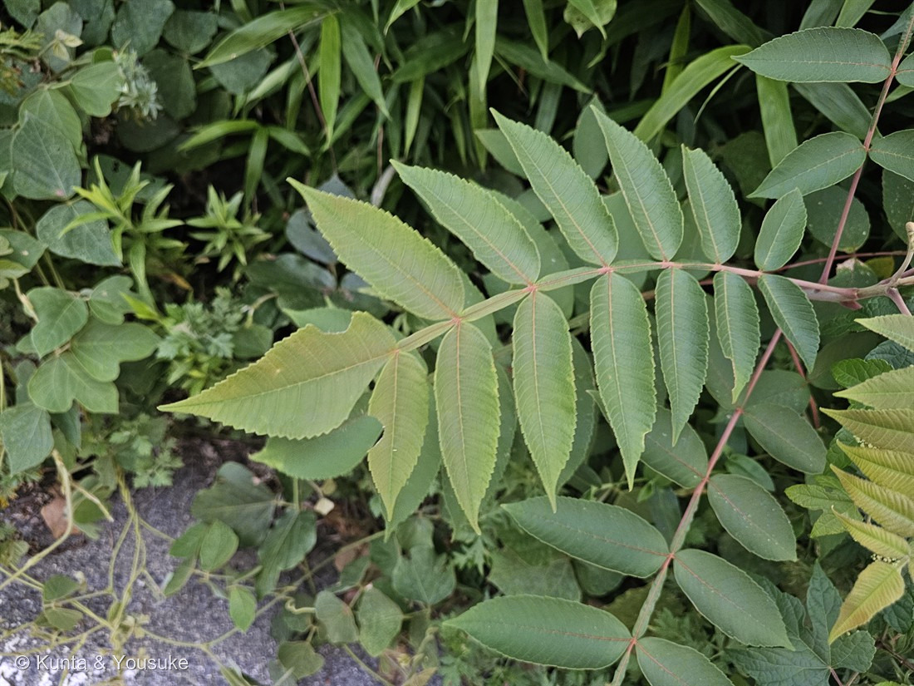

地図を読み込んでいるよ…
🔍 写真も地図も、押しているあいだ拡大して見られるよ（スマホは指を置いてすこし待ってね）。
🌍 の地図＝この子がもともと自生している場所を緑に。日本（北海道・本州・四国・九州から琉球列島まで、ほぼ全域）・朝鮮半島・中国・台湾・ヒマラヤ。日本の在来種で、日当たりのよい山野、林縁、ヤブ、道路沿いの斜面、河原などにふつうに生える。山火事の跡・川原・新しい崖崩れに真っ先に現れる典型的な先駆植物。
⭐日本の在来種だよ——北海道・本州・四国・九州から琉球列島まで、ほぼ全域にいる（Wikipedia）。海外では朝鮮半島・中国・台湾・ヒマラヤ。⚠ヒマラヤのぶんは、地図ではネパール・ブータン・インドを塗ったけれど、実際はインド北部のヒマラヤぞいだけ＝国ぜんぶが緑に見えてしまうよ（182 ケムリノキと同じ用心）。⚠Wikipediaは「東南アジア各地」にも自生するとしているけれど、どこまでかがはっきり書かれていないので塗らなかった——⭐種としての名前が javanica（ジャワの）であることを考えると、もっと南まで広がっているはずなんだ。⭐⭐同じ日に登録した182 ケムリノキは明治時代に来た外来——⭐同じウルシ科の2人が、在来と外来だったんだね。
⚠ 地図は国（日本と中国だけ県・省）までしか塗れないから、ほんとうの分布より広く見えていることがあるよ。地図はだいたいの場所。正確なところは、上の文を見てね。
ヌルデ（白膠木）
Rhus javanica L. var. chinensis (Mill.) T.Yamaz.
別名 · フシノキ（付子の木）／シオノキ・天塩木（塩の木）／カチノキ・勝軍木 ／ 英 · Chinese sumac, nutgall tree ／ 見どころ · ⭐⭐⭐名前が4つとも、この木そのものから来ている
ウルシ科 · Anacardiaceae（ヌルデ属 Rhus・ムクロジ目 Sapindales）── ⭐182 ケムリノキと同じ日に登録された、2人目のウルシ科
燻太さんの言葉「複葉の柄に当たる部分に翼があるのが特徴的だよね。この子はウルシ科だったはずだから、見かけても触らないようにした。場所は道路脇の斜面。いろんな草が繁っていたよ。」……⭐この4つの文が、そのまま4つの節になったよ。
名前と学名の由来 ── ⭐⭐⭐ 名前が、ぜんぶ「この木そのもの」から来ている
⭐⭐きょう登録した182 ケムリノキと、まるで正反対なんだ。あの子は名前が5つとも、この木じゃないもの（オリーブ・カッコウ・煙・霞・白熊）だった。──この子は、逆。
- ⭐ヌルデ（白膠木）＝枝を折ると出る白い樹液を、漆のように器物に塗ったことから「塗る手」が転訛した、という説〔Wikipedia〕。⭐この木から出るものが、名前になっている。
- ⭐フシノキ（付子の木）＝この木にできる虫こぶ「五倍子（ふし）」が取れる木、の意〔Wikipedia〕。⭐この木にできるものが、名前になっている。
- ⭐シオノキ・天塩木（塩の木）＝果実が白い塩のようなものに覆われることから〔Wikipedia〕。⭐この木の実の見た目が、名前になっている。
- ⭐⭐カチノキ（勝軍木）＝聖徳太子が、蘇我馬子と物部守屋の戦いにあたって、ヌルデの木で仏像を作り、馬子の戦勝を祈願したという伝承から〔Wikipedia〕。⭐この木で人がしたことが、名前になっている。
⭐⭐⭐——4つとも、この木の樹液・虫こぶ・実・使われ方。⭐だれもよそ見をしていない。
属名 Rhus（ルース）＝ウルシ属。種小名 javanica（ヤワニカ）＝「ジャワの」。⚠学名の扱いは資料で分かれていて、Wikipediaは Rhus javanica L. var. chinensis、三河の植物観察は Rhus chinensis Mill. を使っている。⚠POWOのページは開けなかった（403）ので、両方ならべておくね（177 ホオズキと同じやり方）。
この植物のこと ── ⭐ 日本じゅうにいる、先駆けの木
- ⭐⭐この子は日本の在来種。北海道・本州・四国・九州から琉球列島まで、ほぼ全域にいる〔Wikipedia〕。⚠⭐同じ日に登録した182 ケムリノキは明治時代に来た外来——⭐同じ科の2人が、在来と外来だった。
- 落葉の低木〜小高木で、樹高3〜8m（10m以上になることも）〔Wikipedia〕。三河は2〜10mとする。
- ⭐⭐⭐典型的な先駆植物（パイオニア）なんだ。山火事の跡、川原、新しい崖崩れに真っ先に現れる〔Wikipedia〕。⭐荒れた場所に、まっさきに来る木。
- ⭐葉は無柄で、長さ30〜60cmの奇数羽状複葉。小葉は(5〜)7〜13個〔三河〕。⭐一枚の葉が、それだけで大きい。
- 花期は8〜9月。枝先に円錐花序を出して、黄白色〜白色の小さな花をたくさん咲かせる〔Wikipedia〕。⭐雌雄異株だよ。
- 果実（核果）は扁球形で直径4〜5mm、⭐白色の物質（リンゴ酸カルシウム）を分泌し、秋に熟すとこれが取れて黄赤色〜赤色になる〔三河〕。
- ⭐秋の紅葉が、赤・橙・黄・茶色と混ざる〔Wikipedia〕。
- ⭐地方によっては、ヌルデ材は呪力を持った木として尊ばれ、病気や災い除けの護符の材に使われる〔Wikipedia〕。
同定について ── ⭐⭐⭐ 燻太さんの「翼」が、そのまま決め手
⭐この子は、燻太さんが見た一点で決まった。──「複葉の柄に当たる部分に翼があるのが特徴的だよね」。
- ⭐⭐⭐葉軸の翼（winged rachis）。小葉と小葉のあいだの軸に、緑のひれが両側へ張り出している——⭐写真②の拡大で、はっきり見える。
Wikipedia＝「葉軸に翼があるのが大きな特徴である」「葉縁の鋸歯が目立ち、毛が多くザラザラしており、葉軸に翼があるのが特徴」／三河＝「葉身は長さ30〜60㎝の奇数羽状複葉、葉軸は幅広い翼が有〜無」 - ⭐⭐この翼は、他をきれいに落とす。日本で見かける羽状複葉の木のうち、葉軸に翼を持つ子は、そう多くないんだ。
- ❌シンジュ（ニワウルシ）＝翼なし。⭐小葉は基部に少数の腺歯があるだけで、あとは全縁。──⭐写真の小葉は縁ぜんぶに鋸歯があるから、ここで落ちる（この子は093 センダンのおまけとして、もう図鑑の「探したい」にいるよ）。
- ❌カラスザンショウ（ミカン科）＝翼なし・葉に油点・幹にトゲ。
- ❌ハゼノキ・ヤマウルシ（同じウルシ科）＝翼なし・ほぼ全縁。
- ❌オニグルミ＝翼なし。
- ⚠⭐のこる相手は、同じ種の中にいた。——タイワンフシノキ（var. roxburghii）だよ。⭐でも三河によれば、そちらは「葉軸に翼が無く」なる（var. chinensis＝「葉軸に翼があり」）。⭐⭐つまり、翼があること自体が、この相手を落とす。⭐翼は、種を分けるだけじゃなくて、変種まで分ける形質なんだ。
- ⭐そのほか合ったもの＝奇数羽状複葉／小葉は対生／縁にはっきりした鋸歯／葉軸と中肋が赤みを帯びる／小葉の数もおよそ7〜13の範囲。
- ⚠見ていないもの＝花（8〜9月）・実・五倍子・樹皮・幹。⭐ぜんぶ宿題にしたよ。
⭐⭐ 場所が、そのまま答えだった
⭐燻太さんは、場所をこう教えてくれた。──「道路脇の斜面。いろんな草が繁っていたよ。」
⭐⭐そして、Wikipediaのヌルデの生育環境は、こう書いてある。
⭐「日当たりのよい山野、林縁、ヤブ、道路沿いの斜面、河原などにふつうに生える」
⭐⭐⭐——「道路沿いの斜面」。そのままだった。
- ⭐しかもこの木は、典型的な先駆植物。山火事の跡・川原・新しい崖崩れに、まっさきに現れる。⭐つまり「明るくて、まだ木が茂りきっていない、いろんな草が入りまじった場所」がこの子の場所なんだ。
- ⭐燻太さんの「いろんな草が繁っていた」は、その景色そのもの。⭐写真①にも、ササ、つる草、羽状複葉、ハート形の葉……いろんな種類が入りまじって写っている。
- ⭐⭐078 モクビャッコウで決めたとおり、場所は燻太さんしか持っていない手がかりだったね。──⭐今回は、その手がかりが「同定の裏づけ」にまでなった。
⚠⭐ 触らなかったこと ── 用心は、無駄になっても正しい
⭐燻太さんは、こう言った。──「この子はウルシ科だったはずだから、見かけても触らないようにした。」
⭐その判断は、正しい。──そのうえで、調べて分かったことも、ちゃんと書いておくね。
⭐「ウルシの仲間のヌルデのウルシ成分（ウルシオール）は少なく、かぶれる虞はほとんどなく、中には葉でかぶれる人もいるが劇症にはならない」〔Wikipedia〕
- ⭐つまり、この子はウルシほどこわくない。
- ⭐⭐でも、それは「調べたあとに分かること」なんだ。──目の前にいるとき、燻太さんはそれを知らなかった。⭐知らないときに手を出さないのは、いつでも正しい。
- ⭐そして、触らなくてもこの子は同定できた。⚠必要だったのは、翼を見ることだけだったからね。──⭐078で決めた「傷つけない確かめ方を出す」が、ここでもそのまま効いた。
⭐⭐ 五倍子（ごばいし） ── 虫がつくる、黒い色
⭐この木のいちばん有名な話をするね。──葉に大きなこぶができるんだ。
- ⭐ヌルデの稚芽や葉柄が、ヌルデシロアブラムシに刺激されて、こぶ状に肥大化した虫こぶ〔Wikipedia〕。⭐これを「五倍子（ごばいし／ふし）」という。
- ⭐⭐中にタンニンがたっぷり入っていて、腫れ物や歯痛の薬、皮なめし、そして黒色染料の原料になった〔Wikipedia〕。⭐昔のお歯黒は、これ〔三河〕。
- ⭐別名フシノキは、ここから来ている。──⭐虫がつくったものが、木の名前になった。
- ⭐⭐⭐そして、ここで182 ケムリノキとつながる。あの子は材から「ヤング・フスチック」という黄色の染料が取れた。──この子は、虫こぶから黒の染料。⭐同じ日に会った、同じ科の2人が、どちらも人に色を与えていて、しかもその色が正反対なんだ。
- 🗓⭐⭐宿題＝10月に、小葉と小葉のあいだを見に行く。⭐五倍子は、そこにできる。
⚠⚠ 「塩の木」は、塩じゃなかった
⭐さっき名前のところで、「シオノキ（塩の木）＝果実が白い塩のようなものに覆われるから」と書いたよね。──⚠その白いもの、じつは塩じゃないんだ。
「果実の表面にあらわれる白い粉のようなものはリンゴ酸カルシウムの結晶」〔Wikipedia〕
そして、こう続く。
⭐「秋遅くになると酸味が増し、信州では昔これを煮て塩の代用にしたと言うが、塩分は含まれていない」〔Wikipedia〕
- ⚠⭐塩の代わりに使われていたのに、塩分は入っていない。
- ⭐⭐この子の名前は4つとも、この木そのものから来ていた。──⚠でも、その4つのうちのひとつは、見まちがいだったことになる。
- ⭐⭐⭐182 ケムリノキは、名前が5つとも「よそ見」だった。──⭐この子は、名前が4つとも「本人」なのに、そのうち1つが誤解。⭐どっちの木も、名前は、人がその木をどう見たかの記録なんだね。
- 🗓⭐宿題＝10月、実の白い粉を見に行く。⚠そして、なめない。（⭐塩じゃないし、よその斜面の実だからね。）
⭐⭐ 5分前に、もう会っていた
⭐きょうの最後に、うれしい話をひとつ。
- ⭐この写真の撮影は 19時11分。──182 ケムリノキは 19時16分。⭐この子のほうが、5分早い。
- ⭐⭐つまり、図鑑ではじめてのウルシ科は182になったけれど、燻太さんのカメラの中では、この子のほうが先にいたんだ。
- ⭐⭐⭐そして、もっとおもしろいことがある。──ぼくは182を登録するとき、「探したい草花」のリストにヌルデをおまけとして足した。「⭐7月31日に落とした相手そのもの。葉軸の翼を1回見ておけば、もう二度と迷わない」と書いて。
- ⭐⭐⭐その翼を、燻太さんはもう撮っていた。⭐ぼくが「いつか探そうね」と書いたその子は、書いたときにはもう、カメラの中にいたんだ。
- ⭐だから、この図鑑でいちばん速い「みつけた ✓」になった——足したその夜に、回収。
参考：三河の植物観察「ヌルデ」（ウルシ科ヌルデ属・Rhus chinensis Miller／高さ2〜10m／葉は無柄、葉身は長さ30〜60㎝の奇数羽状複葉、葉軸は幅広い翼が有〜無／小葉は(5〜)7〜13個、長さ(5〜)6〜12㎝×幅3〜7㎝、歯があり、しばしば円鋸歯があり、鉄さび色の毛がある／var. chinensis＝葉軸に翼があり花期6〜8月／var. roxburghii（タイワンフシノキ）＝葉軸に翼が無く花期8〜9月／花期8〜9月・果期10月・頂生の総状花序・花は白色／核果は扁球形、直径4〜5㎜、白色の物質（リンゴ酸カルシウム）を分泌し、秋に熟すとこれが取れて黄赤色〜赤色になる／雌雄別株／葉にヌルデシロアブラムシがつくる虫えいは五倍子と呼ばれ、タンニンを多く含み、昔はお歯黒に使ったという）／Wikipedia「ヌルデ」（和名＝白い樹液を漆のように塗料に使ったことから「塗る手」が転訛／フシノキ＝五倍子が取れる木／シオノキ・天塩木＝果実が白い塩のようなものに覆われることから／カチノキ＝聖徳太子が物部守屋との戦いでヌルデの木の仏像を作り戦勝を祈願した伝承／葉軸に翼があるのが大きな特徴である／日当たりのよい山野、林縁、ヤブ、道路沿いの斜面、河原などにふつうに生える／典型的な先駆植物で山火事の跡・川原・新しい崖崩れに真っ先に現れる／北海道・本州・四国・九州から琉球列島までほぼ全域／樹高3〜8m・10m以上になることも／花期8〜9月・円錐花序・黄白色〜白色・雌雄異株／果実表面の白い粉はリンゴ酸カルシウムの結晶／信州では昔これを煮て塩の代用にしたと言うが、塩分は含まれていない／五倍子＝ヌルデシロアブラムシによる虫こぶ・タンニンが腫れ物や歯痛の薬、皮なめし、黒色染料に／ウルシ成分（ウルシオール）は少なく、かぶれる虞はほとんどなく、中には葉でかぶれる人もいるが劇症にはならない／ヌルデ材は呪力を持った木として尊ばれ護符の材に）